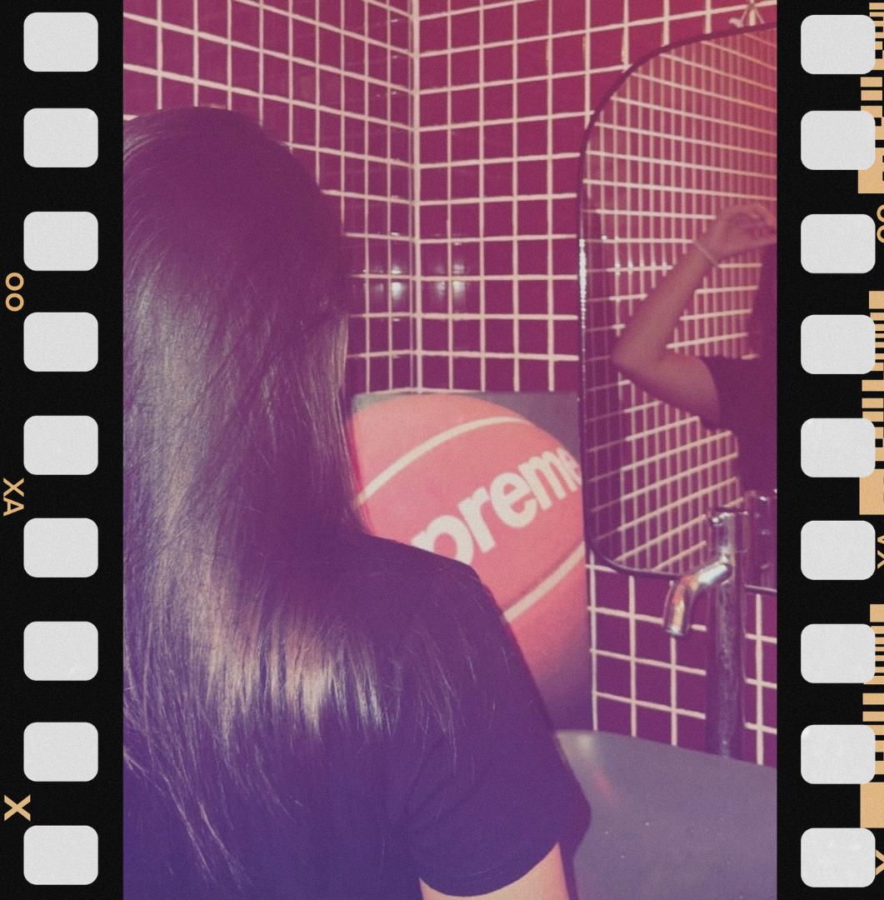

Marketplace B2B
AndaliTrack
Menghubungkan petani andaliman di kawasan Toba dengan pembeli skala besar, lengkap dengan pelacakan panen. Dikerjakan bersama tim Marsiadapari.
✧ Laguboti, Toba — Sumatera Utara ✧
Saya Davina, mahasiswa S1 Sistem Informasi Institut Teknologi Del. Saya membangun antarmuka web yang rapi, elegan, dan mudah diakses untuk semua orang.

Fokus saya ada di titik temu antara analisis proses bisnis dan tampilan yang benar-benar bisa dipakai. Saya senang membongkar kebutuhan pengguna lewat wawancara singkat, menerjemahkannya jadi alur, lalu membangunnya dengan HTML semantik dan CSS modern.
Di luar kuliah, saya aktif di tim lomba teknologi dan mengerjakan proyek yang berakar pada komunitas Batak Toba.
Tiga proyek yang paling menggambarkan dedikasi dan cara saya berkarya.
Marketplace B2B
Menghubungkan petani andaliman di kawasan Toba dengan pembeli skala besar, lengkap dengan pelacakan panen. Dikerjakan bersama tim Marsiadapari.
Situs statis
Tempat mahasiswa IT mencari rekan satu tim untuk lomba dan proyek kelas, dengan gaya visual RPG retro.
Kesehatan anak
Pencatatan jadwal imunisasi anak untuk orang tua dan kader posyandu, dengan pengingat yang mudah dibaca.
Mata kuliah inti yang sudah dan sedang saya tempuh pada program studi Sistem Informasi.
| Kode | Mata kuliah | SKS | Status |
|---|---|---|---|
| 12S3101 | Pemrograman dan Pengujian Aplikasi Web | 3 | Berjalan ✧ |
| 12S2103 | Pemrograman Berorientasi Objek | 3 | Lulus ♡ |
| 12S2205 | Sistem Operasi | 3 | Lulus ♡ |
| 12S3204 | Manajemen Proyek Sistem Informasi | 2 | Lulus ♡ |
| 12S1102 | Basis Data | 3 | Lulus ♡ |
| Total SKS tercatat | 14 SKS | ||